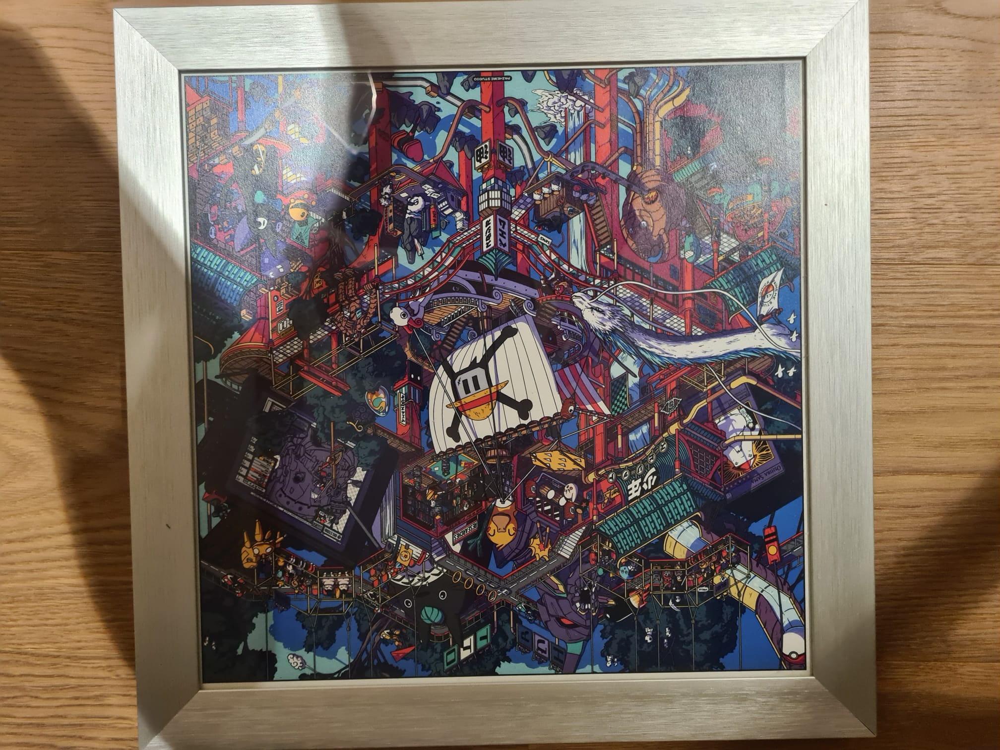
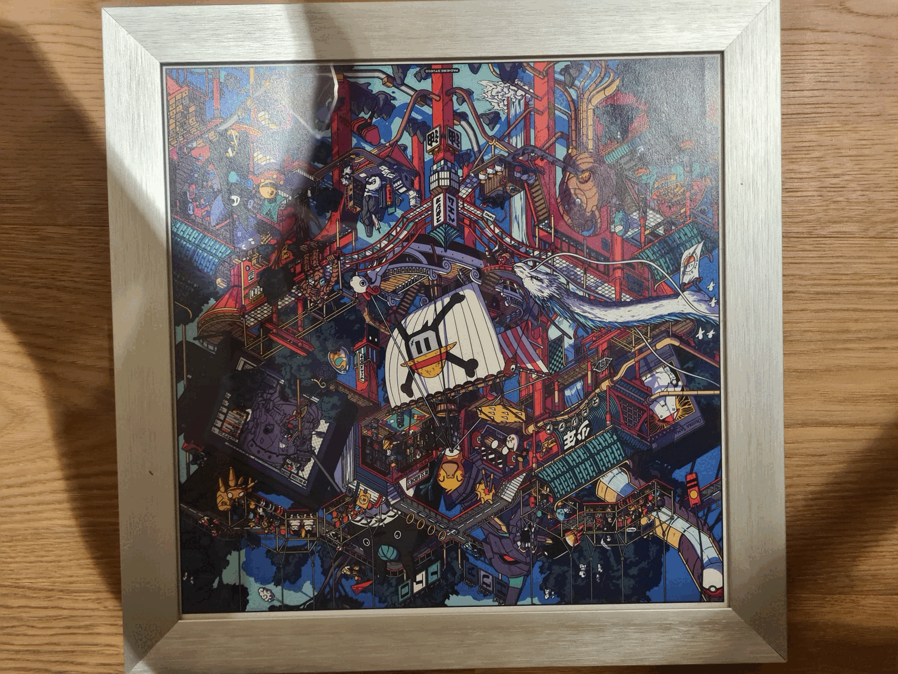
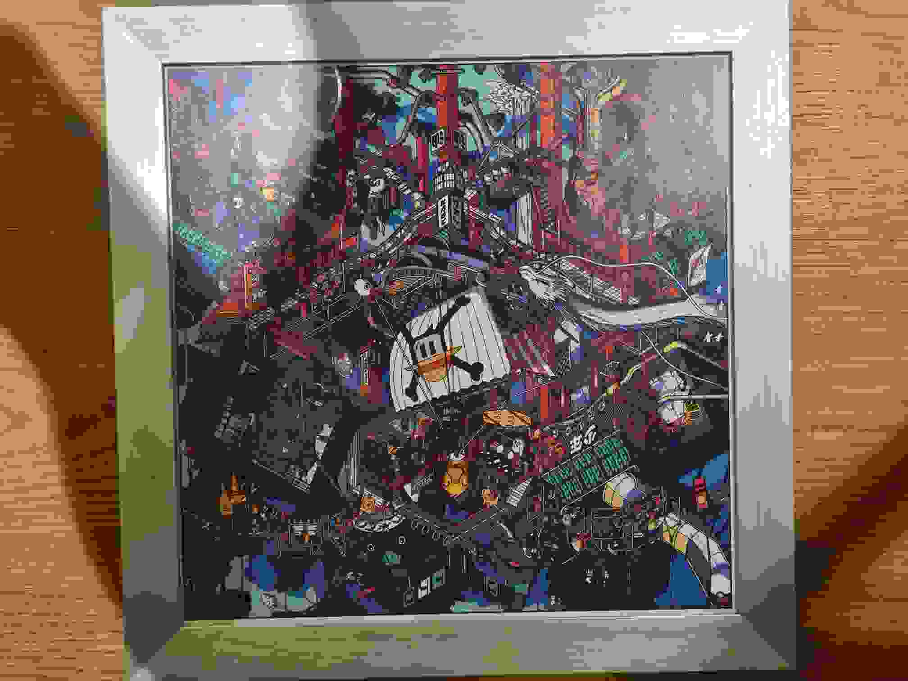
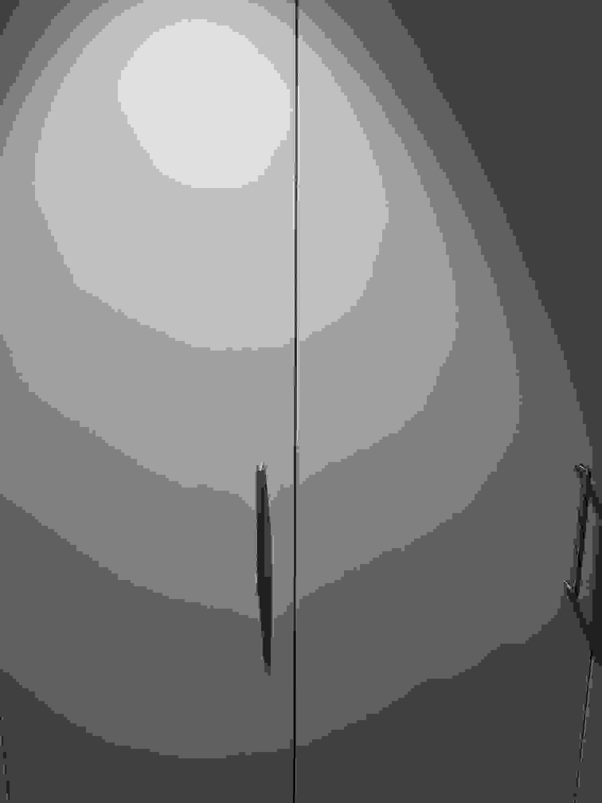

Erklärseite M152
Bilder
 Bild: image.livingathome.de
Bild: image.livingathome.de
Bilder
Bilder können in unterschiedlichen Komprimierungsstufen gespeichert werden. Hier sind einige Beispiele:
Original Bild mit vielen Details im JPEG Format

Grösse: 499 KB
Vorteile von JPEG:
Nachteile von JPEG:
Original Bild mit wenigen Details im JPEG Format
Grösse: 51 KB
Vorteile von JPEG:
Nachteile von JPEG:
Konvertiertes Bild mit vielen Details im BMP Format

Grösse: 9.1 MB
Vorteile von BMP:
Nachteile von BMP:
Konvertiertes Bild mit wenigen Details im BMP Format

Grösse: 9.1 MB
Vorteile von BMP:
Nachteile von BMP:
Konvertiertes Bild mit vielen Details im PNG Format

Grösse: 1 MB
Vorteile von PNG:
Nachteile von PNG:
Konvertiertes Bild mit wenigen Details im PNG Format
Grösse: 288 KB
Vorteile von PNG:
Nachteile von PNG:
Konvertiertes Bild mit vielen Details im GIF Format

Grösse: 1.1 MB
Vorteile von GIF:
Nachteile von GIF:
Konvertiertes Bild mit wenigen Details im GIF Format
Grösse: 345 KB
Vorteile von GIF:
Nachteile von GIF:
Konvertiertes Bild mit vielen Details im JPG Format

Grösse: 32 KB
Vorteile von JPG
Nachteile von JPG:
Konvertiertes Bild mit wenigen Details im JPG Format

Grösse: 19 KB
Vorteile von JPG
Nachteile von JPG:
Videos
Bilder können in unterschiedlichen Komprimierungsstufen unf Formaten gespeichert werden. Hier sind einige Beispiele: